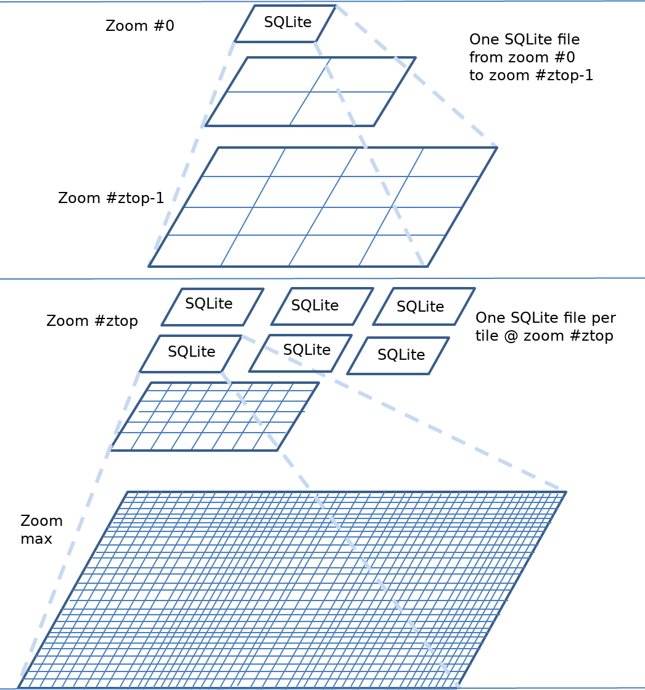

MS RFC 130: Add support to Z-top, a multi-SQLite, multi-pyramid cache structure¶
- Date:
2020-01-30
- Author:
Jérome Boué
- Contact:
- Status:
Adopted
- Last update:
2020-01-30
- Version:
MapCache 1.10
Overview¶
This RFC proposes to add to MapCache support to a new cache structure involving multi-SQLite caches organized in multiple pyramids: one single pyramid on lowest zoom levels, then as many pyramids as tiles at a given zoom level, e.g. 8, refered to as top zoom level. Each of these pyramids starts with one tile at that top zoom level, then four tiles at next zoom level and so on. Of course the top zoom level value is configurable.
Following is a figure illustrating this cache structure.
Rationale¶
The main advantage of this structure is when a user wants to work offline with only a subset of the World: Only two (relatively small) SQLite files have to be copied.
Proposed solution¶
From a configuration point of view, a multi-SQLite cache of class ztop is specified with a <top> tag defining the top zoom level. Templates keys are needed to determine SQLite files to use.
<!-- multi-pyramid, multi-SQLite, starting at zoom level 8 -->
<cache name="z8" type="sqlite3">
<top>8</top>
<dbfile top_fmt="%02d">/path/to/z{top}-{top_x}-{top_y}.sqlite3</dbfile>
</cache>
<!-- single cache from zoom levels 0 to 7 -->
<cache name="z1-7" type="sqlite3">
<dbfile>/path/to/z0-0-0.sqlite3</dbfile>
</cache>
<!-- Composite cache made of all caches to address all zoom levels -->
<cache name="zfull" type="composite">
<cache min-zoom="0" max-zoom="7">z1-7</cache>
<cache min-zoom="8">z8</cache>
</cache>
The following template keys will be made available:
{top} is replaced by the top zoom level.
{top_x} is replaced by the x value of the tile index at top zoom level, starting from left
{top_y} is replaced by the y value of the tile index at top zoom level, starting from bottom
{inv_top_x} is replaced by the x value of the tile index at top zoom level, starting from right
{inv_top_y} is replaced by the y value of the tile index at top zoom level, starting from top
The following formatting attributes will be made available: top_fmt, top_x_fmt, top_y_fmt, inv_top_x_fmt, inv_top_y_fmt. They default to “%d”.
Backward compatibility issues¶
None.
Documentation needs¶
MapCache Cache Types document will be updated.
Files¶
This new feature is implemented in:
lib/cache_sqlite.c
contrib/mapcache_detail/mapcache_detail.c
Ticket ID and reference¶
Associated pull request is #224.
Voting history¶
Adopted with +1 from PSC members JeffM, MikeS, JeromeB, JukkaR, EvenR, SethG, SteveL, StephanM